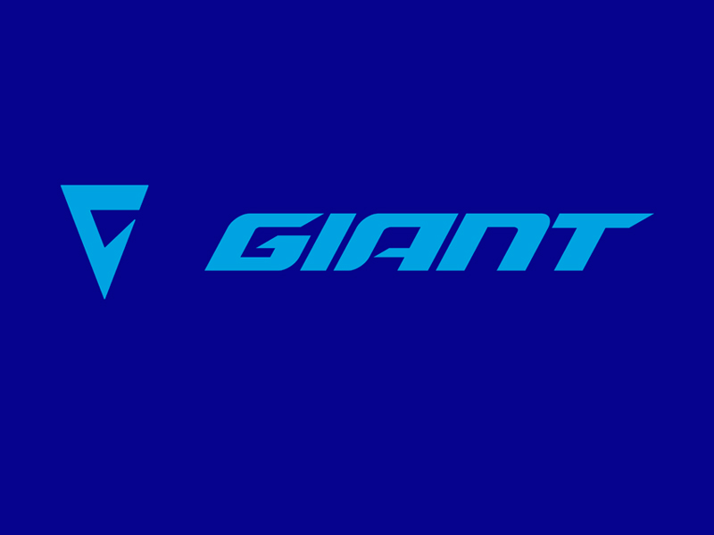
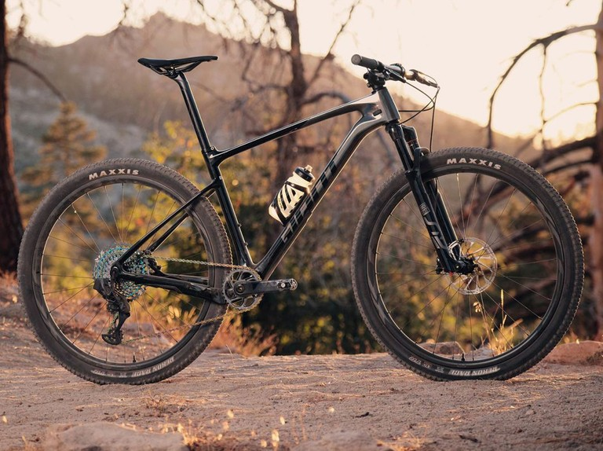
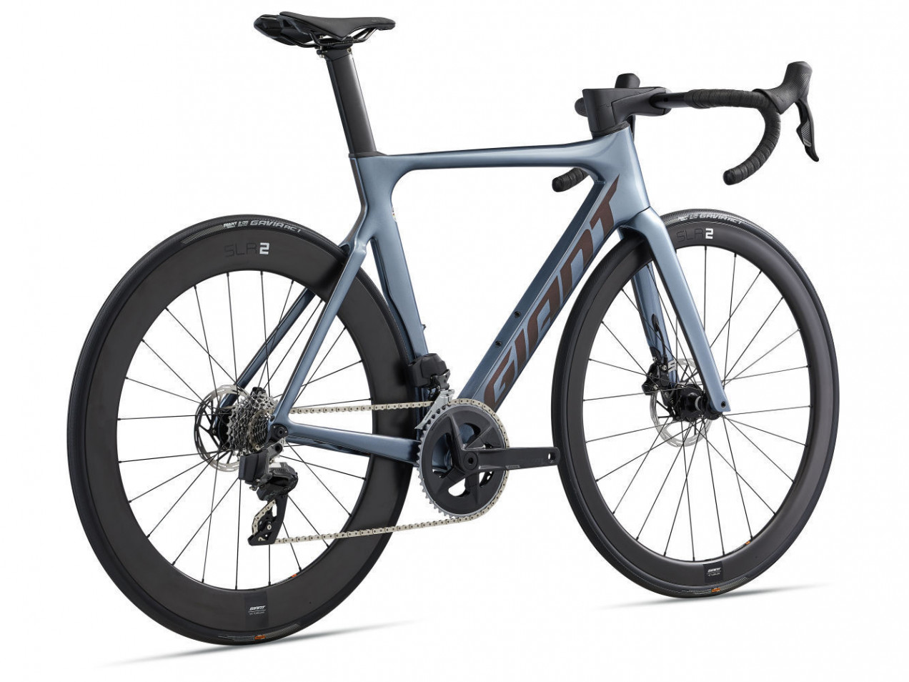
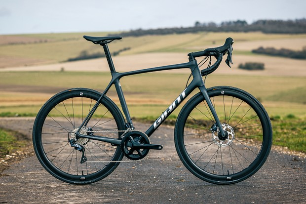

GRACIAS POR PERMITIRNOS SER PARTE DE TU VIDA RODADORA
A CONTINUACION PODRAS VER ALGUNOS DE NUESTROS MODELOS
DE BICICLETAS, ESCOGE LA QUE MEJOR SE ADAPTE A TI

$129,900
GIANT XTC ADVANCED 2022
UNA BICICLETA MUY LIGERA CON UNA GEOMETRIA PARA XCO O MARATON
CON UN DISEÑO COMPLETAMENTE EN CARBONO EL PESO DE EL PURO CUADRO ES DE 1300 GRAMOS POR LO QUE PASA A SER UNA DE LOS
CUADROS MAS LIGEROS DEL MUNDO
LOS COMPONENTES QUE TRAE DE FABRICA ES EL GRUPO SHIMANO XTR AL COMPLETO
UNA SUSPENSION ROCKSHOX SID SL CON UN RECORRIDO DE 100 mm LO CUAL ES UNA DE LAS SUSPES MAS LIGERAS DEL MUNDO

$180,900
GIANT PROPEL ADVANCED 2022
UNA BICICLETA PARA COMPLETAMENTE DISEÑADA DN CARBONO CON UNA GEOMETRIA PARA
PLANEAR CON TOTAL CONFIANZA CON UN ANGULO DE TIJERA REDISEÑADO POR COMPLETO EL CUADRO PESA 1000 GRAMOS
LOS COMPONENTES QUE PORTA ESTA CAMPEONA DEL MUNDO ES EL SRAM RORCE AXS AL
COMPLETO CON SUS NUEVOS DUALES INALAMBRICOS BLUETHOOTH CON CUN PLATO DE 52 DIENTES Y UN CASSETE DE 12 VELOCIDADES

$69,900
GIANT TCR ADVANCED PRO DISC 2
LA MEJOR ESCALADORA DEL MUNDO LA CAMPEONA DE LOS WORLD TOURS
UNA BICICLETA PERFECTA PARA UNA ESCALADA DEMANDANTE Y UN CICLISTA ESCALADOR LA TCR ES LA BICI PARA ESCALAR MAS
VERSATIL DE TODOS LAS BICICLETAS DE CARRETERA EL MUNDO CON UN PESO DE 1100 GRAMOS Y UNAS FIBRAS DE TORAIK T700
MONTADO AL COMPLETO CON EL GRUPO SHIMANO DURA-ACE DE CARBONO AL COMPLETO